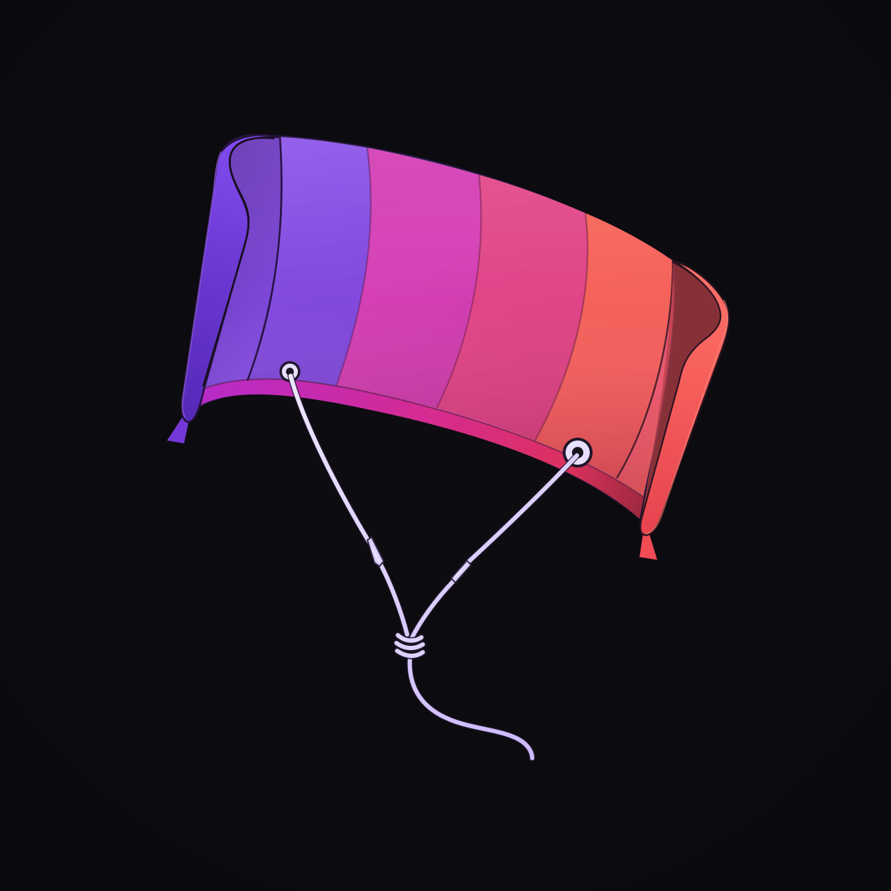

KitePlayerA native media player for Kotlin Multiplatform.
Video·Audio·Subtitles·HLS and DASH·HDR·Picture-in-picture·Compose or native views
Subtitles, drawn by libass.

KitePlayerVideo·Audio·Subtitles·HLS and DASH·HDR·Picture-in-picture·Compose or native views